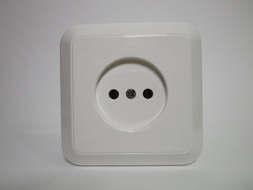
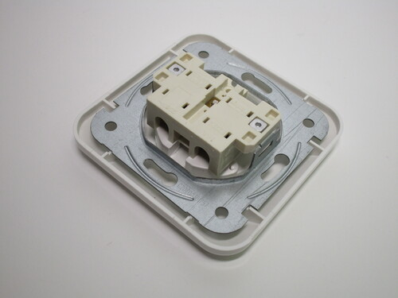
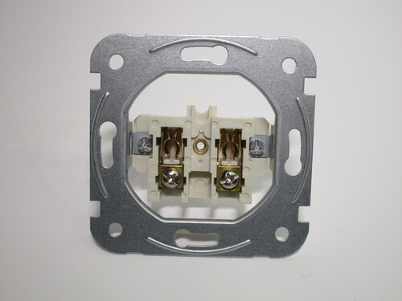

European non-earthed plugs and sockets
Before the advent and popularisation of earthed standards, various types of 2-pin non-earthed plugs and sockets were used throughout Europe, which may still be found in older buildings. While these plugs varied in shape and size, depending on their age and country of origin, all of them used two round pins spaced 19mm apart, which helped with intercompatibility.
Plugs used pins with a diameter of 4.0mm (for a maximum rating of 10A) or, later, 4.8mm (16A), depending on their current capability. Sockets accepting both kinds of plug were common in most of Europe, though older models may have only accepted 4.0mm plugs, as well as ones in Italy and Switzerland, as those countries never adopted 4.8mm plugs.
Nowadays, these sockets are known as CEE 7/1, and can still be bought for replacements in some countries. Matching plugs with a round base are called CEE 7/2. Notably, due to their design, earthed CEE 7/4 (Schuko) and 7/6 (French) plugs can be connected to non-earthed outlets, while CEE 7/2 plugs cannot be used with either type of earthed socket.
Standard CEE 7/1 socket
Rating: 16A 250V
This is a modern example of a CEE 7/1 socket. As is common on these types of outlets, it has a very shallow recess; this makes it possible to touch the pins of a partially inserted plug, which may be live if they're not insulated. Additionally, safety shutters aren't present, though there is a spot inside for where a shutter mechanism would have gone.
The socket was bought in the Netherlands, one of the few countries where these can still be bought, for replacing existing outlets only. Given its purpose, it's quite odd that this model can only be mounted using screws and doesn't have the side "claws" needed for old European wall boxes, possibly indicating that they may not be as common there.
  {kind=link}
{kind=link}
{kind=link}
Modern CEE 7/2 plug
Rating: 16A 250V
The most distinguishing feature of CEE 7/2 non-earthed plugs is their completely round base, which serves two purposes: the first is to prevent someone from touching the live pins, if the socket has a deep enough recess; the second is to impede the use of it in an earthed (Schuko or French-style) outlet. This questionable design decision was apparently made for safety reasons, though it's unclear what the actual danger would be.
Modern versions of these plugs, like the one shown here, are still available in some countries, though seldom used. There isn't much they could possibly be necessary for nowadays, however, since not being able to connect them to earthed sockets is a significant limitation.


Surface-mount double socket
Rating: 16A 250V
Surface-mount non-earthed sockets such as this one, with two outlets, are also available. The most notable feature of this model is that the recess is much deeper than the one shown earlier, making it impossible to touch the live pins of a plug.
The holes for mounting it to the wall are on the core of the device, where the contacts and screw terminals are located. The top of the plastic case has pre-made indentations, for cutting holes to feed wires or conduit.


French non-earthed socket
Rating: 16A 250V
Non-earthed sockets can also still be bought in France, though they're not all that common. This one is part of the high-end Legrand Dooxie series, and is thus designed to look modern and is made of high quality materials.
Safety shutters are present, a mandatory feature in France, and has a fairly deep recess. The front cover can be unclipped to reveal the mounting screws ("claws" are also available as a separate item). Wiring is done on the back using screwless (push-in) terminals.


Vintage German non-earthed plug
Rating: 6A 250V
This is a typical example of an old version of these plugs, made out of bakelite. It has split pins, to make better contact with sockets used at the time, with a diameter of 4.0mm. This was quite common on older plugs, as they were often wired to low-powered devices such as lamps. The thinner pins also makes it compatible with outlets that may not have accepted 4.8mm pins.
The bakelite casing is formed out of a single piece, and thus cannot be opened; the wires are thus connected from the front, with the strands being shaped into a circle first and then secured with nuts, which screw into the threaded section at the bottom of the pins.
CEE 7/1 power strip
Rating: 10-16A 250V
This old power strip has three non-earthed sockets, with a small recess and no safety shutters (likely due to the age of the device). It can be easily taken apart for wiring, as it's possible that it originally came without a power cord.
Oddly enough, this was produced in Italy (and was found at an Italian flea market) even though CEE 7/1 sockets were never used there. However, given the Dutch and Belgian certification markings on the back, this was very likely intended as an export item.